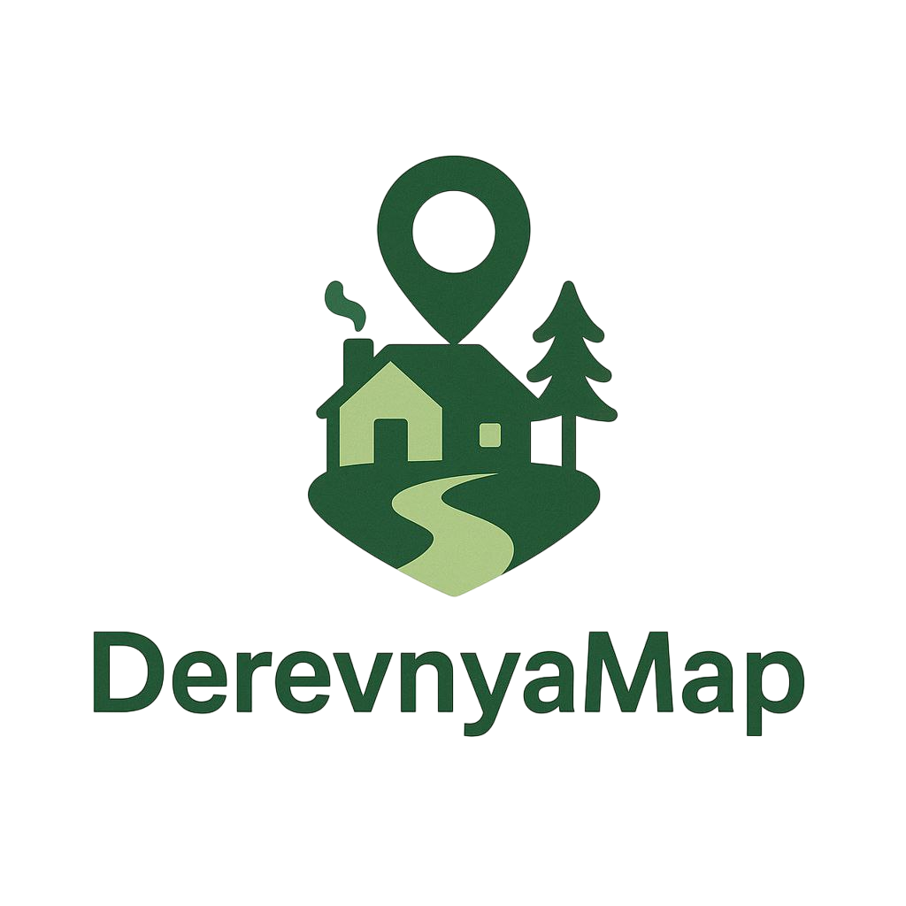

DerevnyaMap
О проекте
DerevnyaMap собирает на одной интерактивной карте проверенные средства размещения в сельской местности — от старинных усадеб до современных эко‑лофтов. Мы лично общаемся с хозяевами, чтобы убедиться в качестве сервиса, публикуем реальные фото и показываем, что есть рядом: озёра, лесные тропы, баня, фермерские лавки. Туристу не нужно перелопачивать объявления: фильтры по расстоянию, цене и активностям помогут выбрать идеальный отдых за три клика. Владельцы объектов получают возможность размещения и поток гостей без хлопот с рекламой.